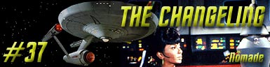
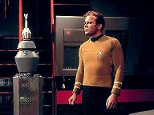
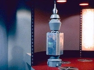
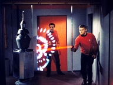
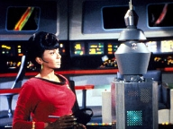
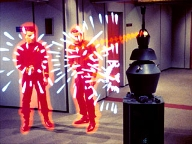

|
Srie
Clssica
Temporada 2

Anlise do episdio por
Carlos
Santos


|
MANCHETE
DO EPISDIO Data Estelar: 3451.9.  Ao
perceber que no conseguira derrotar o inimigo, Kirk tenta se comunicar com
ele, e surpreendentemente, o ataque cessa, e um sinal de comunicao
enviado. Uhura identifica o sinal como um cdigo interplanetrio obsoleto. Uma
tentativa de traduo pelo computador da nave causa a sobrecarga, mas mesmo
assim entidade consegue informaes suficientes para estabelecer comunicao. Aps
o contato, a ser levado a bordo e a tripulao da nave descobre que se
trata de uma maquina, um tipo de sonda espacial que chama a si mesmo de
Nomad. Spock descobre atravs dos bancos de dados da Enterprise que
Nomad havia inicialmente sido construda por um cientista chamado, Jackson
Roykirk e lanado da Terra no fim do sculo XX com inteno de pesquisar
formas de vida aliengena, mas dada como destruda. Spock
conclui que a sonda foi alterada de algum modo, tanto em forma quanto em
programao. Agora a sonda dotada de um poder imenso tem a misso de eliminar
formas de vida biolgicas no perfeitas, segundo seu prprio julgamento. Enquanto
Kirk, Spock e McCoy tentam descobrir o que fazer, Nomad, atrado pelo som da
voz de Uhura, que cantava atravs do Intercom, segue pela nave at chegar a
ponte. Kirk informado por Scotty da presena do mecanismo na ponte. Nomad se
aproxima da tenente e comea a question-la sobre o significado da musica que
cantava. De repente o mecanismo inicia algum tipo de sondagem em uhura. Scotty
ao perceber isto, tenta impedi-lo, mas repelido por uma descarga de energia e
cai morto na ponte. Uhura, embora viva, est em estado catatnico.  Embora
Spock se mostre interessado em estudar Nomad, Kirk est decidido a incapacit-lo
assim que possvel., e manda Spock trabalhar em uma pesquisa sobre possveis
pontos fracos do mecanismo. Quando Nomad se recusa a baixar suas defesas, Kirk
consegue faz-lo mudar de opinio, deixando claro que Nomad o reconhece como
criador. Enquanto isto, Chappel trabalha na reeducao de Uhura, que tem
a constituio mental de uma criana. Sem
sucesso em sua pesquisa, Spock tenta usar o elo mental Vulcano com Nomad.
apesar da quase matar o vulcano, o procedimento tem sucesso. Spock descobre que
a sonda Nomad original (projetada para procurar novas formas de vida) aps
sofrer um acidente, encontrou uma sonda aliengena que tinha como misso
descobrir e esterilizar amostras de solo em outro planeta, com a qual se fundiu.
Aps este processo, Nomad criou uma nova diretriz baseada na fuso das
diretrizes de ambos os equipamentos.  Kirk
finalmente revela a Nomad que ele no Jackson Roykirk, e manda que ele
retorne a segurana, mas a sonda dificuldade em compreender o que para ela
uma inconsistncia. Ele retorna a cela, mas d a entender que pretende voltar
ao ponto de lanamento, provavelmente, a Terra, um lugar cheio de
unidades biolgicas imperfeitas. A
caminho da deteno, Nomad mata mais dois guardas e segue para a enfermaria,
onde segundo McCoy teria examinado o histrico medico de Kirk, o que lhe daria
elementos para concluir que ele no o criador. Nomad volta a
engenharia e desabilita os sistemas de suporte de vida, com objetivo de matar a
tripulao sem danificar a nave. A sonda sabe agora que Kirk no seu
criador, e no aceita mais as suas ordens. Kirk
comea ento um duelo de lgica com Nomad, e o convence de que a prpria
sonda imperfeita, convencendo-a de que deve se auto-esterilizar. Eles
aproveitam este momento para transportar o aparelho para o espao, onde Nomad
finalmente cumpre sua programao e implementa sua autodestruio. De volta a ponte, Kirk informado que Uhura est recuperao e deve voltar ao trabalho em uma semana, e ento a Enterprise retoma seu curso.
 O
que diferencia esta verso do tema o mistrio da origem de Nomad.
Inicialmente confundido com algum equipamento ou mesmo ser aliengena, a
descoberta de que o mecanismo na verdade uma sonda de origem terrestre
alterada suscita outras questes: Como Nomad e a sonda aliengena conseguem se
reparar ? Como se fundiram e evoluram? Pode um mecanismo evoluir ? Porm,
tais questes jamais so aprofundadas durante o segmento, que opta por seguir
a linha Como vamos nos livrar de Nomad, antes que ele nos destrua, e deixa
para o espectador conjecturar (ou no) a respeito destas questes. Embora tal
opo exija por parte de quem assiste o episodio uma forte dose de suspenso
de descrena, talvez esta tenha sido uma escolha acertada, uma vez que seria
complicado tratar os temas anteriormente citados com correo no pouco tempo
de durao do episodio. Outro
tema recorrente o do poder absoluto. Nomad um mecanismo de certa forma
avanado, capaz de tirar e dar a vida as unidades biolgicas, claramente
excedendo sua programao e indo alm do planejado pelo criador, mas
por outro lado uma criana mentalmente falando. Sua lgica simples fcil
de ser entendida, mas ele por outro lado no consegue ir alm da compreenso
desta simples diretriz. Nos
j ouvimos o clich Com grande poder vem grande responsabilidade varias
vezes, e Jornada nas Estrelas varias
vezes viria tratar este tema. De fato, todo mundo lembra do episodio de estria
da serie, Where No Man Has Gone Before,
onde Gary Mitchel passa a controlar imensos poderes e acaba sendo corrompido
por eles. Ou em Charlie X, onde
um ser humano, criado por aliengenas e tambm imensamente poderoso no
consegue se adaptar a vida entre seres humanos normais, ou em The
Squire of Gothos , etc, etc. A
mitologia de Jornada das Estrelas
esta cheia destes exemplos, e no importa se homem, maquina ou alienigena, a
concluso sempre a mesma. Em The
Changeling Nomad no pode se corromper, e tem uma pureza de propsito
genuinamente ingnua: Ele quer fazer o que acredita o que certo, a diretriz
do criador, mas ele no consegue julgar as conseqncias de suas aes. Sua
capacidade de compreenso no evoluiu tanto quanto o seu poder, e o resultado
to perigoso quanto o que vimos em Where
No Man Has Gone Before, ou em qualquer um dos exemplos citados. Entre
as proezas de que Nomad capaz est a capacidade de trazer Scotty de volta a
vida, fato pouco explorada no episodio. Se a morte algo incomum, o que dir
a ressurreio, mas fora uma demonstrao parca de espanto por parte dos
oficiais, muito pouco se pode colher da morte de Scotty, alm demonstrar as
habilidades de Nomad, mas tal situao poderia ter sido melhor explorada.
Scotty volta como se nada tivesse acontecido, e eu me pergunto de McCoy
realmente explicou ao engenheiro o que aconteceu, na verdade. Outra
coisa to interessante quanto pouco explicada oelo-mental de Spock com
Nomad. Eventualmente certas linhas do segmento fazem questo de no atribuir a
Nomad o status de forma de vida, ento, como pode se estabelecer um elo mental
com uma maquina ?  Tal
situao nada acrescenta a Spock ou ao episodio, e classificar a sua inteligncia
mecnica rudimentar como pensamento passa um pouco dos limites. Seria
muito mais simples extrair as informaes atravs do computador, o que teria
um nvel de credibilidade maior do que o que foi proposto. Porm,
o que mais chama a ateno no quesito coisas estranhas a forma
encontrada para re-educar Uhura. A
viso de Chappel ensinando a tenente como faria como uma criana do
maternal ridcula. Algo que poderia ser facilmente evitado. Chegamos
ao final do episodio e mais uma vez Kirk salva o dia usando a sua esperteza e
derrotando o computador em seu prprio terreno, num duelo de lgica, usando a
prpria programao de Nomad contra ele. Uma soluo simplista, porm
neste caso at eficiente. Tendo Nomad demonstrado nenhuma capacidade de ir alm
de sua programao (falamos da programao alterada aps seu acidente, que
fique claro) tendo ele se equivocado quanto a identidade do criador,
podemos aceitar tal situao sem muitos danos as nossas sinapses. Como disse
Spock, um excelente uso da lgica. No fim de tudo, The Changeling passa bem por um primeiro contato, mas no suporta muito bem ser re-visitado, uma vez que sua formula depende muito do mistrio de sua origem. Uma vez desfeito este mistrio, sobra muito pouco que se possa extrair dele, deixando-o um pouco aborrecido.
Spock: Esta unidade uma
Mulher. Nomad: Uma massa de impulsos em
conflito. Spock: Inteligncia no requer necessariamente massa, senhor Scotty.
Escrito por John
Meredyth Lucas Elenco: Blaisdell Makee como Mr. Singh |